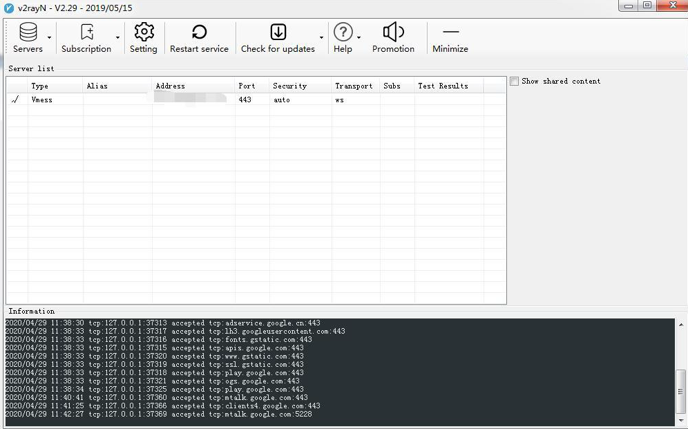

How to config for windows¶
software download link：：https://wwa.lanzous.com/iFZHFgcbyxg
follow picture below to config
1、 click ‘帮助’to change language to English first,

2、 then quit app ,open exe v2rayN.exe again

3、method of auto config (recommend)

4、click “update subscribe”

Choose any server after update config
5、method of manual config (you can try this method if you failed to setup use with auto config method)
6、Click server button, choose vmess

7 、input your account info

8、Back to home page ,then you can open any web site
